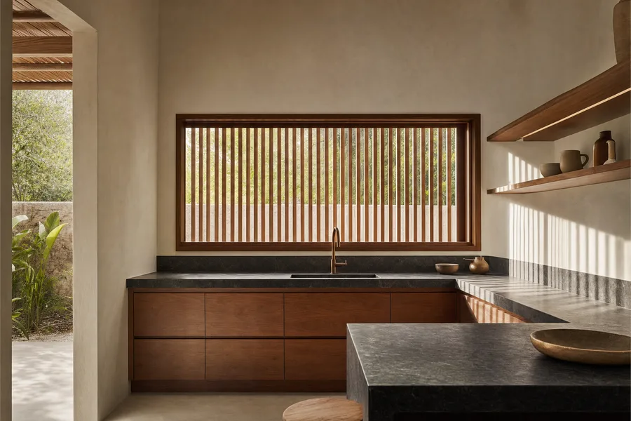
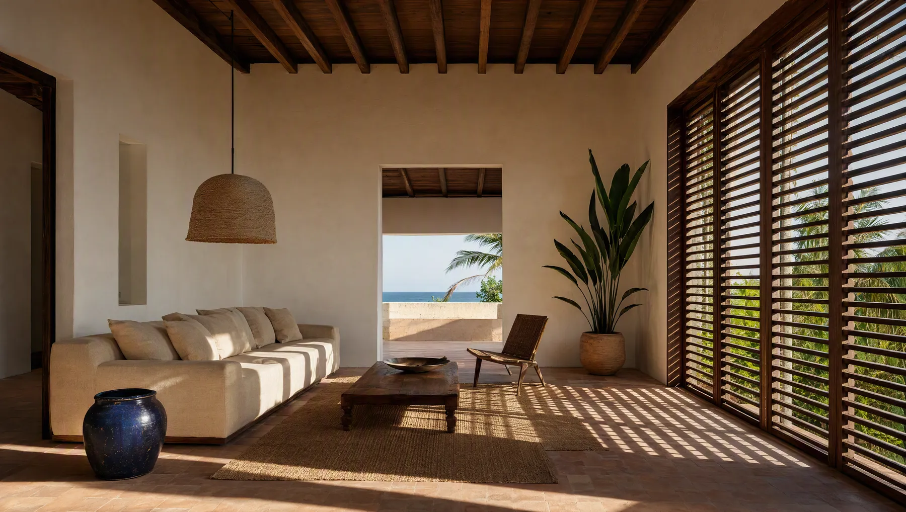
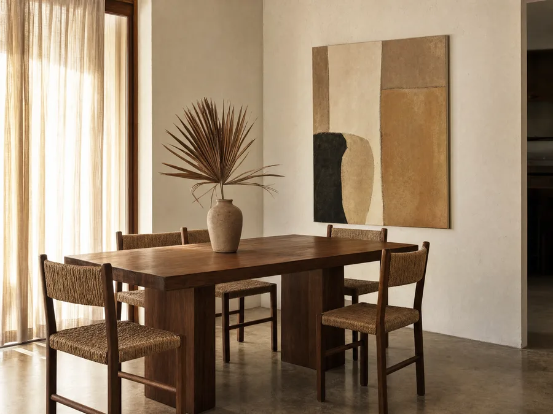
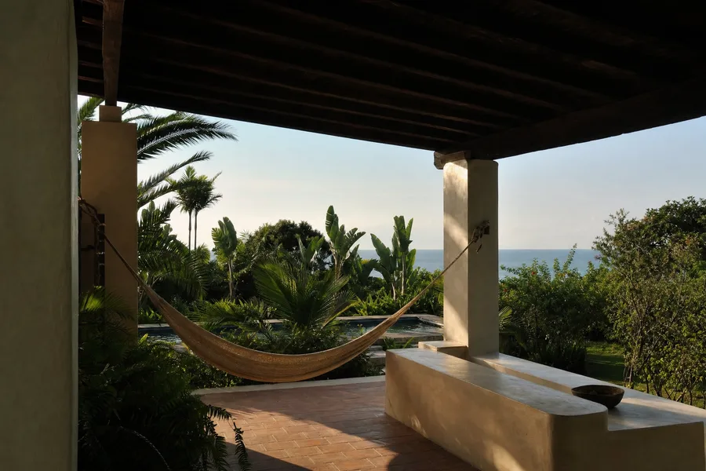
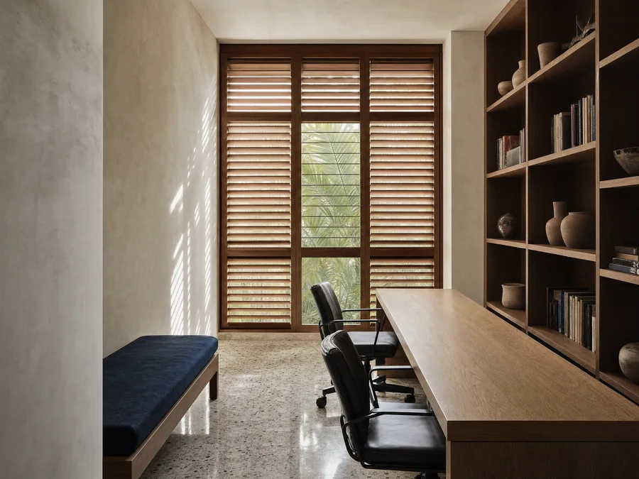
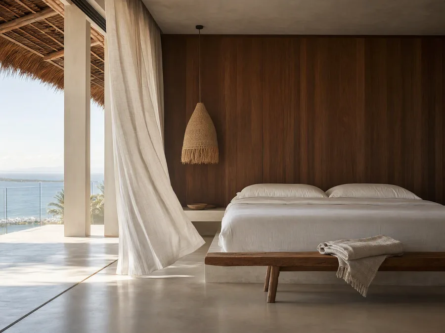
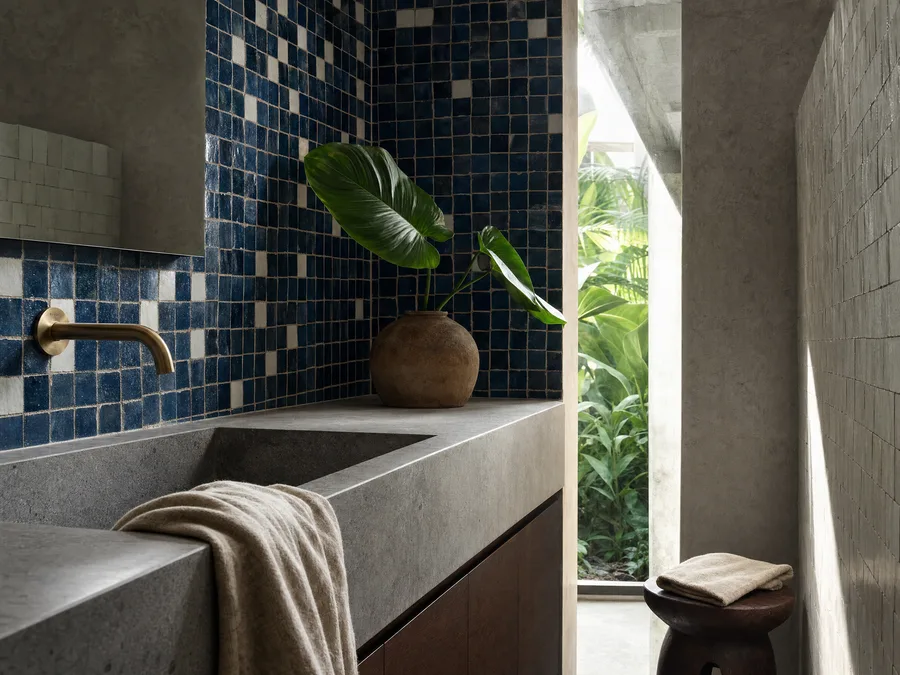
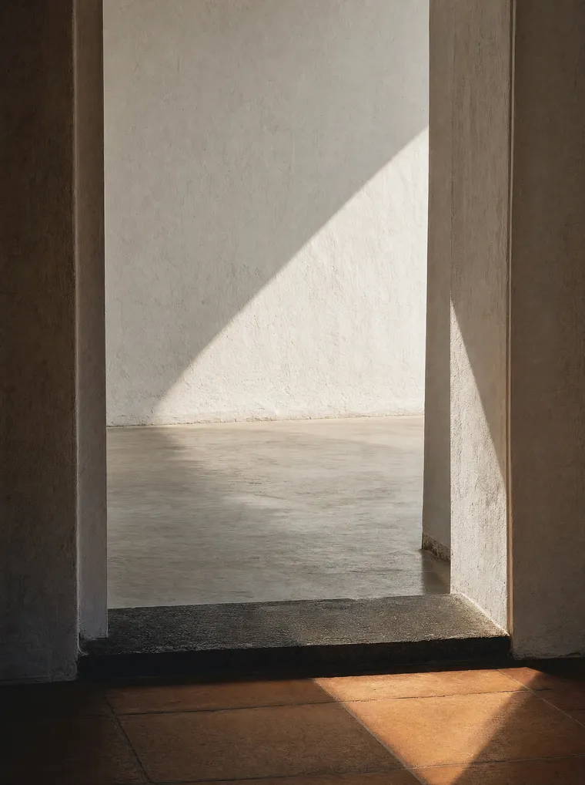
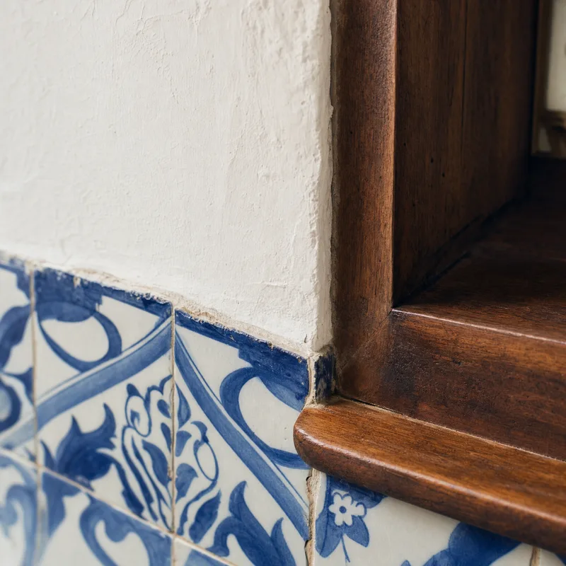

Casa AR
- Local
- Vilas do Atlântico
- Tipo
- Residência
- Área
- 320 m²
- Ano
- 2026
Cozinha aberta para o quintal, com veneziana de correr no lugar de vidro fixo.

Estúdio de arquitetura de interiores. Projeto residencial e comercial em Salvador e no Litoral Norte, com prazo declarado e escopo escrito antes de a primeira parede ser tocada.
É o nome que a gente dá ao jeito de projetar aqui. Em Salvador, o luxo que se sente no corpo não é mármore, é sombra e vento cruzando a casa às três da tarde.
Boa parte do que se vê em revista foi desenhado para inverno europeu e chega aqui como problema: tecido que mofa, madeira que estufa, metal que oxida em seis meses de maresia, vidro que transforma a sala num forno. Projetar para este clima é uma decisão técnica antes de ser estética.
Veneziana, cobogó, beiral e brise entram na planta antes do móvel. É o que permite abrir a casa sem entregá-la ao sol das duas.
Ventilação cruzada muda a temperatura de um ambiente em graus reais. Uma janela sozinha, de frente para uma parede cega, não ventila nada.
Latão escovado no lugar do cromado, madeira de dendê e cumaru no lugar de MDF em área molhada, ferragem de inox 316 a menos de dois quilômetros do mar.
A luz daqui lava a cor. Tom que parece elegante na loja fica lavado na sala, e é por isso que a paleta é sempre testada no local, no horário em que a casa mais é usada.
Seis dos últimos trabalhos. O nome de cada um é a sigla dos moradores, porque casa de cliente não vira vitrine com nome e sobrenome.

Cozinha aberta para o quintal, com veneziana de correr no lugar de vidro fixo.

Apartamento dos anos 70 com a planta original devolvida, sem derrubar nenhuma parede estrutural.

Casa a 400 metros do mar. Toda a ferragem especificada em inox 316.

Escritório de advocacia com sala de reunião que também recebe cliente sozinha.

Vista de mar em três quartos, e o desafio de sombrear sem fechar a vista.

Azulejo desenhado com ceramista de Maragogipinho, assentado peça a peça.
O prazo abaixo é o de um apartamento de até 200 m². Casa e obra maior somam de quatro a oito semanas, e isso é dito no orçamento, não descoberto no meio.
1 semana
Visita ao imóvel, medição e uma conversa longa sobre rotina: quem mora, quem cozinha, quem recebe, que horas a casa é usada.
Você recebe: levantamento medido e o relatório do que foi ouvido.
3 semanas
Duas propostas de partido diferentes, não variações da mesma. Você escolhe uma, e a outra morre ali.
Você recebe: duas plantas de leiaute, imagens de referência e a estimativa de investimento de cada uma.
5 semanas
O partido escolhido vira projeto: circulação, marcenaria, revestimento, paleta testada no local e nos horários de uso.
Você recebe: plantas, cortes, imagens em 3D e a paleta final de materiais.
4 semanas
A parte que ninguém mostra e que decide se a obra sai como no desenho: marcenaria peça a peça, ponto de elétrica, luz, hidráulica e paginação de piso.
Você recebe: caderno executivo e a lista de compras com fornecedor e prazo de entrega de cada item.
acompanhamento
Visita quinzenal, com relatório escrito depois de cada uma. Quem executa é a sua equipe ou uma das construtoras que a gente indica, e a escolha é sua.
Você recebe: relatório de cada visita e o repasse direto ao marceneiro e ao eletricista.

Quase todo desentendimento em obra nasce de uma expectativa que ninguém escreveu. Então a gente escreve, antes de assinar.

Não por estilo. Cada um resolve um problema específico de clima, de manutenção ou de custo por metro.
As duas primeiras são sobre dinheiro e prazo, que é o que realmente trava a decisão.
O projeto é cobrado por metro quadrado de área trabalhada, e a faixa fica entre R$ 180 e R$ 320 por m², dependendo de quanto do imóvel entra e de quanta marcenaria o projeto tem. Um apartamento de 120 m² costuma ficar entre R$ 22 mil e R$ 38 mil. O valor exato sai depois da primeira visita, que não é cobrada.
Depende do que já existe e do padrão escolhido, e por isso a gente estima faixa desde a etapa 2, quando ainda dá tempo de mudar. Reforma de interiores em Salvador tem ficado entre R$ 2.500 e R$ 6.000 por m² em 2026, com marcenaria sendo quase sempre o maior item.
Dá, e em muitos casos é o mais sensato. O projeto sai completo, e a execução é dividida em fases com ordem definida, para não refazer o que já foi feito. Elétrica e hidráulica vêm sempre primeiro.
Sim, e a gente prefere. Na etapa 1 a gente inventaria o que fica, o que é reformado e o que sai. Sofá bom com estofamento novo costuma custar menos que sofá novo ruim.
Com autorização do morador, sim, em dois dos projetos publicados. É a única prova que vale, e a gente combina a visita com quem mora.
A gente indica três construtoras e os profissionais de marcenaria, gesso e elétrica com quem já trabalhou, mas a contratação é sua e direta. A Soleira não recebe comissão de nenhum deles, e isso está escrito no contrato.
Em cinco parcelas amarradas às etapas: 20% na assinatura e o restante na entrega de cada uma. Se o projeto parar por decisão sua, você paga só as etapas entregues.
A etapa 2 tem uma rodada de ajuste incluída. Se ainda assim o caminho não for esse, o contrato pode ser encerrado ali, com o pagamento das duas primeiras etapas, e você fica com o levantamento medido, que é seu.
Litoral Norte e Chapada, sim, com as visitas de obra concentradas em blocos e o deslocamento orçado à parte. Fora da Bahia, só projeto, sem acompanhamento presencial.
Uma hora, no imóvel ou em vídeo, para entender o que você quer fazer e dizer com honestidade se somos o estúdio certo para isso.
O que ajuda ter em mãos: